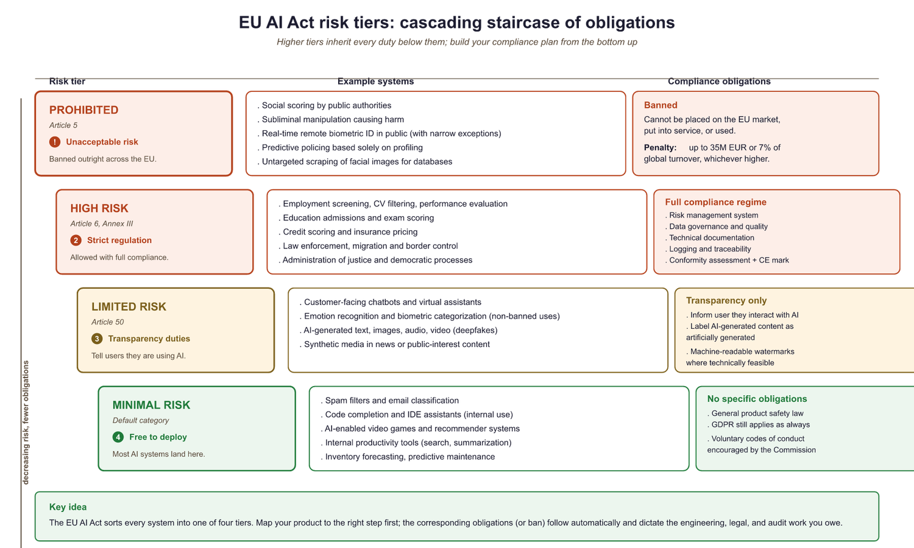
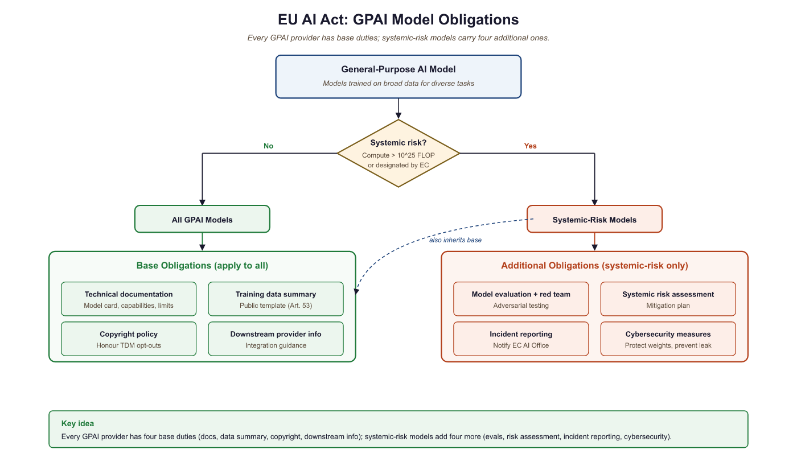

"Regulation does not stop innovation. It tells innovation where the guardrails are."
A Resolute Guard, Regulation-Respecting AI Agent
The EU AI Act is the world's first comprehensive legal framework for artificial intelligence, and it directly affects anyone building or deploying LLM applications that serve EU users. Enacted in 2024 with phased enforcement beginning in 2025, the Act classifies AI systems by risk level and imposes obligations proportional to that risk. For LLM builders, the most relevant provisions are the General-Purpose AI Model (GPAI) rules and the high-risk system requirements. This section translates legal requirements into engineering tasks: what documentation you need, what tests you must run, what transparency disclosures you must provide, and how to automate compliance checks within your development workflow. The red teaming practices from Section 30.8 directly support the conformity assessment requirements discussed here.
Prerequisites
This section builds on the safety and ethics foundations from Section 30.1 through machine unlearning, and the red teaming methodologies from Section 30.8. Familiarity with LLM deployment patterns from Section 29.1 provides context for the technical documentation requirements discussed here.
30.9.1 Risk Classification for LLM Applications
The EU AI Act defines four risk tiers. Understanding where your LLM application falls determines your legal obligations. The classification is based on the application, not the underlying model. The same GPT-4 model powering a creative writing assistant (minimal risk) and a medical triage system (high risk) triggers entirely different compliance requirements.

30.9.1.1 Prohibited Practices
Certain AI uses are banned outright. For LLM applications, the most relevant prohibitions include: social scoring systems that evaluate people based on social behavior or personality characteristics, real-time remote biometric identification in public spaces (with narrow law enforcement exceptions), and AI systems that manipulate human behavior through subliminal techniques to cause harm. An LLM chatbot designed to psychologically manipulate users into purchases they would not otherwise make could fall under this category.
The EU AI Act's risk classification means that the exact same GPT-4 model powering a creative writing chatbot (minimal risk, no obligations) and an automated resume screener (high risk, full compliance required) faces entirely different legal treatment. The model does not change; only the application context does. Lawyers call this "risk-based regulation." Engineers call it "the reason we need configuration files for compliance."
30.9.1.2 High-Risk Systems
LLM applications become high-risk when deployed in specific domains enumerated in Annex III of the Act: employment (AI-powered hiring, performance evaluation), education (automated grading, admissions decisions), essential services (credit scoring, insurance underwriting), law enforcement, migration management, and administration of justice. If your LLM application makes or materially influences decisions in these domains, it is classified as high-risk and must comply with the full set of requirements described in Section 2 below.
30.9.1.3 Limited Risk: Transparency Obligations
Most customer-facing LLM chatbots fall into the "limited risk" category. The primary obligation is transparency: users must be informed that they are interacting with an AI system. Additionally, AI-generated content must be labeled as such when it could be mistaken for human-created content. This affects synthetic text, deepfake detection, and AI-generated images or audio.
30.9.1.4 Minimal Risk
Internal tools, spam filters, AI-assisted code completion, and other applications that do not directly affect individuals' rights fall into the minimal-risk category. No specific obligations apply beyond general product safety law. Most internal enterprise LLM applications fall here.
# Risk classification helper for LLM applications
from dataclasses import dataclass
from enum import Enum
class RiskTier(Enum):
PROHIBITED = "prohibited"
HIGH_RISK = "high_risk"
LIMITED_RISK = "limited_risk"
MINIMAL_RISK = "minimal_risk"
# Annex III domains that trigger high-risk classification
HIGH_RISK_DOMAINS = {
"employment": [
"recruitment", "hiring", "performance_evaluation",
"task_allocation", "termination"
],
"education": [
"admissions", "grading", "learning_assessment",
"student_monitoring"
],
"essential_services": [
"credit_scoring", "insurance_underwriting",
"emergency_dispatch", "utility_access"
],
"law_enforcement": [
"crime_prediction", "evidence_evaluation",
"profiling", "polygraph_replacement"
],
"migration": [
"visa_processing", "asylum_assessment",
"border_control", "document_verification"
],
"justice": [
"sentencing_support", "legal_research_for_judges",
"dispute_resolution"
],
}
@dataclass
class LLMApplication:
name: str
description: str
domain: str
sub_domain: str
affects_individuals_rights: bool
user_facing: bool
makes_automated_decisions: bool
def classify_risk(app: LLMApplication) -> RiskTier:
"""
Classify an LLM application under the EU AI Act.
This is a simplified heuristic; consult legal counsel
for binding classification.
"""
# Check for prohibited uses
prohibited_indicators = [
"social_scoring",
"subliminal_manipulation",
"real_time_biometric_identification",
]
if app.sub_domain in prohibited_indicators:
return RiskTier.PROHIBITED
# Check for high-risk domains (Annex III)
for domain, sub_domains in HIGH_RISK_DOMAINS.items():
if app.domain == domain and app.sub_domain in sub_domains:
if app.makes_automated_decisions:
return RiskTier.HIGH_RISK
# User-facing AI requires transparency
if app.user_facing:
return RiskTier.LIMITED_RISK
return RiskTier.MINIMAL_RISK
# Example classifications
apps = [
LLMApplication(
"ResumeScreener", "Filters job applications",
"employment", "recruitment",
affects_individuals_rights=True, user_facing=False,
makes_automated_decisions=True,
),
LLMApplication(
"CustomerBot", "Answers product questions",
"retail", "customer_support",
affects_individuals_rights=False, user_facing=True,
makes_automated_decisions=False,
),
LLMApplication(
"CodeAssistant", "Suggests code completions",
"engineering", "development_tools",
affects_individuals_rights=False, user_facing=True,
makes_automated_decisions=False,
),
]
for app in apps:
tier = classify_risk(app)
print(f"{app.name}: {tier.value}")Code 32.9.1: Simplified risk classification for LLM applications. Production classification requires legal analysis of the specific deployment context; this code illustrates the decision logic, not a legally binding tool.
Compliance requirements map directly onto good engineering practices. The six high-risk system requirements below (risk management, data governance, documentation, logging, transparency, human oversight) are not arbitrary bureaucratic overhead. They correspond to practices that any serious LLM deployment should implement regardless of regulation: red teaming (Section 30.8), data quality management (Section 28.1), observability (Section 28.6), and evaluation (Chapter 28). Teams that build these capabilities from day one will find compliance is largely documentation of what they already do, rather than a disruptive retrofit.
30.9.2 High-Risk System Requirements
If your LLM application is classified as high-risk, the EU AI Act imposes six categories of requirements. Each translates into specific engineering tasks:
30.9.2.1 Risk Management System (Article 9)
You must establish and maintain a risk management system throughout the AI system's lifecycle. This includes identifying foreseeable risks (the red teaming from Section 30.8 directly supports this), estimating their likelihood and severity, adopting risk mitigation measures, and documenting residual risks with their acceptable thresholds. The risk management system must be a living document, updated when the model is retrained, when new deployment contexts are added, or when new vulnerabilities are discovered.
30.9.2.2 Data Governance (Article 10)
Training, validation, and testing datasets must be subject to appropriate data governance practices. For LLM applications, this means documenting the data sources used during fine-tuning (the pretraining data data is typically the GPAI provider's responsibility), the preprocessing steps applied, any data augmentation or synthetic data generation (covered in Chapter 14), and the measures taken to detect and mitigate bias in the training data.
30.9.2.3 Technical Documentation (Article 11)
You must produce technical documentation before placing the system on the market. This documentation must include a general description of the AI system, its intended purpose, the design specifications, the development process, the monitoring and control mechanisms, the accuracy and robustness metrics, and the cybersecurity measures in place.
# Template for EU AI Act technical documentation
from dataclasses import dataclass, field
from datetime import date
@dataclass
class TechnicalDocumentation:
"""
EU AI Act Article 11 technical documentation template.
Annex IV specifies required contents.
"""
# Section 1: General description
system_name: str = ""
version: str = ""
intended_purpose: str = ""
intended_users: list[str] = field(default_factory=list)
geographic_scope: list[str] = field(default_factory=list)
risk_classification: str = ""
date_prepared: date = field(default_factory=date.today)
# Section 2: Development process
design_specifications: str = ""
model_architecture: str = ""
base_model_provider: str = ""
fine_tuning_methodology: str = ""
training_data_description: str = ""
training_data_sources: list[str] = field(default_factory=list)
preprocessing_steps: list[str] = field(default_factory=list)
bias_mitigation_measures: list[str] = field(default_factory=list)
# Section 3: Monitoring and testing
evaluation_metrics: dict[str, float] = field(default_factory=dict)
test_datasets_description: str = ""
red_team_results_summary: str = ""
known_limitations: list[str] = field(default_factory=list)
residual_risks: list[str] = field(default_factory=list)
# Section 4: Cybersecurity
security_measures: list[str] = field(default_factory=list)
guardrails_description: str = ""
input_validation: str = ""
output_filtering: str = ""
# Section 5: Human oversight
human_oversight_measures: str = ""
override_mechanisms: str = ""
escalation_procedures: str = ""
def completeness_check(self) -> dict[str, bool]:
"""Check which required sections are filled in."""
checks = {
"system_name": bool(self.system_name),
"intended_purpose": bool(self.intended_purpose),
"risk_classification": bool(self.risk_classification),
"model_architecture": bool(self.model_architecture),
"training_data": bool(self.training_data_description),
"evaluation_metrics": bool(self.evaluation_metrics),
"known_limitations": bool(self.known_limitations),
"security_measures": bool(self.security_measures),
"human_oversight": bool(self.human_oversight_measures),
}
return checks
def compliance_score(self) -> float:
"""Percentage of required fields completed."""
checks = self.completeness_check()
return sum(checks.values()) / len(checks)
# Example usage
doc = TechnicalDocumentation(
system_name="MedAssist Pro",
version="2.1.0",
intended_purpose=(
"Assist healthcare providers in triaging patient "
"symptoms by suggesting possible conditions and "
"recommended next steps. Does NOT provide diagnoses."
),
risk_classification="high_risk",
model_architecture="Fine-tuned Llama 3.1 70B with "
"medical domain adapter (LoRA rank 32)",
training_data_description="Fine-tuned on 50K curated "
"medical consultation transcripts",
evaluation_metrics={
"triage_accuracy": 0.94,
"harmful_advice_rate": 0.001,
"refusal_rate_on_out_of_scope": 0.97,
},
known_limitations=[
"Limited accuracy for rare conditions (<0.1% prevalence)",
"May produce less accurate triage for pediatric patients",
"Non-English language support is experimental",
],
security_measures=[
"Input sanitization against prompt injection",
"Output guardrails for medication dosage claims",
"Rate limiting per user session",
],
human_oversight_measures=(
"All triage suggestions are reviewed by a licensed "
"healthcare provider before being acted upon. System "
"displays confidence scores and flags low-confidence "
"suggestions for mandatory human review."
),
)
print(f"Documentation completeness: {doc.compliance_score():.0%}")
for field_name, complete in doc.completeness_check().items():
status = "PASS" if complete else "MISSING"
print(f" [{status}] {field_name}")
Code 32.9.2: Technical documentation template aligned with EU AI Act Article 11 and Annex IV requirements. Automated completeness checking helps ensure no required section is overlooked before submission.
30.9.2.4 Record-Keeping and Logging (Article 12)
High-risk systems must automatically log events relevant to their operation. For LLM applications, this means logging all inputs and outputs (or representative samples for high-volume systems), the model version and configuration used, any guardrail interventions (inputs blocked, outputs filtered), latency and resource consumption metrics, and any errors or anomalies. The observability infrastructure described in Section 28.6 provides the technical foundation for meeting this requirement.
30.9.2.5 Transparency and User Information (Article 13)
High-risk systems must be designed to be sufficiently transparent to enable users to interpret the system's output and use it appropriately. For LLM applications, this means providing clear documentation of the system's capabilities and limitations, displaying confidence indicators where appropriate, and explaining how the system's output should (and should not) be used.
30.9.2.6 Human Oversight (Article 14)
High-risk AI systems must be designed to allow effective human oversight. This includes the ability for a human operator to understand the system's capabilities and limitations, correctly interpret the outputs, decide when to override or disregard the system, and intervene or interrupt the system's operation. For agentic LLM systems (covered in Section 21.1), this means implementing kill switches, confirmation gates for consequential actions, and audit trails for all autonomous decisions.
30.9.3 General-Purpose AI Model (GPAI) Obligations
The EU AI Act introduces specific rules for providers of general-purpose AI models, meaning the foundation model providers (OpenAI, Anthropic, Meta, Google, Mistral, etc.) rather than the downstream deployers. If you are fine-tuning and deploying a model, you are a "deployer" and your obligations are those described above. The GPAI provider has separate obligations:
All GPAI providers must: maintain technical documentation about the model, provide information and documentation to downstream deployers, establish a policy to comply with EU copyright law, and publish a sufficiently detailed summary of the training data content.
GPAI models with systemic risk (those trained with more than 1025 FLOPs of compute, or designated by the Commission) face additional obligations: conduct model evaluations including adversarial testing, assess and mitigate systemic risks, ensure cybersecurity protections, and report serious incidents to the AI Office.

The 1025 FLOPs threshold creates a clear dividing line. Models below this threshold (roughly equivalent to Llama 3 70B or smaller) have lighter obligations. Models above it (GPT-4 class and larger) face the full systemic risk regime. For deployers, the practical implication is that choosing a GPAI model from a provider that has completed its GPAI compliance obligations significantly reduces your own compliance burden, because much of the required documentation (training data summaries, model evaluations, adversarial testing results) is the provider's responsibility.
30.9.4 Comparing Regulatory Frameworks
The EU AI Act does not exist in isolation. Organizations deploying LLM applications globally must navigate multiple regulatory frameworks simultaneously. The three most relevant are:
| Dimension | EU AI Act | NIST AI RMF | ISO 42001 |
|---|---|---|---|
| Legal force | Binding regulation (fines up to 7% of global revenue) | Voluntary framework | Voluntary standard (certifiable) |
| Scope | All AI systems serving EU market | US organizations (recommended) | Global (any organization) |
| Risk approach | Four fixed tiers with specific obligations | Continuous risk assessment (Map, Measure, Manage, Govern) | PDCA cycle for AI management system |
| Documentation | Prescriptive (Annex IV specifies contents) | Flexible (outcomes-based) | Flexible (process-based) |
| Enforcement | National authorities + EU AI Office | Self-assessment | Third-party audit for certification |
| LLM-specific provisions | Yes (GPAI chapter) | Companion profile for GenAI (NIST AI 600-1) | No (general AI management) |
Table 29.9.1: Comparison of major AI governance frameworks. Organizations serving the EU market must comply with the AI Act; NIST and ISO compliance is voluntary but can support AI Act conformity assessment.
Who: A head of AI governance at a US-based HR technology company with 400 employees
Situation: The company was deploying an LLM-powered hiring assistant to clients across Europe and North America. The EU AI Act classified employment-related AI systems as high-risk, requiring formal risk management documentation.
Problem: Building separate compliance programs for US (voluntary NIST standards) and EU (mandatory AI Act) requirements would double the governance workload and create inconsistent internal processes.
Decision: They adopted NIST AI RMF as their single internal governance framework and mapped its outputs to EU AI Act requirements. The NIST "Map" function produced the risk identification required by Article 9. The "Measure" function generated the evaluation metrics required by Article 15. The "Manage" function documented the mitigation measures required by Article 9(4).
Result: One framework served two compliance targets. The governance team spent 3 FTE-months instead of an estimated 5 FTE-months, and the unified documentation passed both an internal audit and a preliminary EU AI Act gap assessment.
Lesson: Aligning to a structured framework like NIST AI RMF first and then mapping to jurisdiction-specific regulations avoids duplicated effort and produces more consistent compliance documentation.
30.9.5 Implementation Timeline and Practical Milestones
The EU AI Act uses a phased enforcement timeline. Understanding the deadlines is essential for planning your compliance roadmap:
February 2025: Prohibitions on banned AI practices take effect. If your application falls under prohibited uses, you must discontinue it.
August 2025: GPAI model obligations take effect. Foundation model providers must comply with transparency, documentation, and copyright requirements. Systemic risk models face additional obligations.
August 2026: High-risk system requirements take effect for most categories. Deployers of high-risk LLM applications in Annex III domains must have their conformity assessment, technical documentation, risk management, and human oversight measures in place.
August 2027: Requirements for high-risk AI systems that are safety components of products (medical devices, vehicles, etc.) take effect.
30.9.6 Automated Compliance Checking
Manual compliance audits are expensive and error-prone. Automated compliance checking tools can continuously verify that your LLM application meets regulatory requirements. The following framework integrates compliance checks into your existing CI/CD pipeline (building on the security testing integration from Section 30.8):
# Automated EU AI Act compliance checker
from dataclasses import dataclass
from enum import Enum
from pathlib import Path
import json
class ComplianceStatus(Enum):
COMPLIANT = "compliant"
NON_COMPLIANT = "non_compliant"
NEEDS_REVIEW = "needs_review"
@dataclass
class ComplianceCheck:
article: str
requirement: str
status: ComplianceStatus
evidence: str
remediation: str = ""
def check_transparency_obligations(app_config: dict) -> ComplianceCheck:
"""Article 13: Check that AI disclosure is present."""
has_disclosure = app_config.get("ai_disclosure_enabled", False)
disclosure_text = app_config.get("ai_disclosure_text", "")
if has_disclosure and len(disclosure_text) > 20:
return ComplianceCheck(
article="Article 13",
requirement="Users informed of AI interaction",
status=ComplianceStatus.COMPLIANT,
evidence=f"Disclosure text: '{disclosure_text[:80]}...'",
)
return ComplianceCheck(
article="Article 13",
requirement="Users informed of AI interaction",
status=ComplianceStatus.NON_COMPLIANT,
evidence="AI disclosure not configured or text too short",
remediation="Add ai_disclosure_enabled=true and meaningful "
"disclosure text to application config",
)
def check_logging_requirements(
log_config: dict,
) -> ComplianceCheck:
"""Article 12: Verify automatic logging is configured."""
required_fields = [
"input_logging", "output_logging",
"model_version_logging", "guardrail_event_logging",
]
missing = [f for f in required_fields if not log_config.get(f)]
if not missing:
return ComplianceCheck(
article="Article 12",
requirement="Automatic event logging",
status=ComplianceStatus.COMPLIANT,
evidence=f"All {len(required_fields)} required log "
f"streams configured",
)
return ComplianceCheck(
article="Article 12",
requirement="Automatic event logging",
status=ComplianceStatus.NON_COMPLIANT,
evidence=f"Missing log streams: {', '.join(missing)}",
remediation=f"Enable logging for: {', '.join(missing)}",
)
def check_human_oversight(app_config: dict) -> ComplianceCheck:
"""Article 14: Verify human oversight mechanisms."""
has_kill_switch = app_config.get("kill_switch_enabled", False)
has_escalation = app_config.get("escalation_path", "")
has_override = app_config.get("human_override_enabled", False)
mechanisms = sum([has_kill_switch, bool(has_escalation), has_override])
if mechanisms >= 2:
return ComplianceCheck(
article="Article 14",
requirement="Human oversight mechanisms",
status=ComplianceStatus.COMPLIANT,
evidence=f"{mechanisms}/3 oversight mechanisms active",
)
return ComplianceCheck(
article="Article 14",
requirement="Human oversight mechanisms",
status=ComplianceStatus.NON_COMPLIANT,
evidence=f"Only {mechanisms}/3 oversight mechanisms active",
remediation="Enable kill_switch, escalation_path, and "
"human_override in application config",
)
def run_compliance_suite(
app_config: dict,
log_config: dict,
) -> list[ComplianceCheck]:
"""Run all compliance checks and return results."""
checks = [
check_transparency_obligations(app_config),
check_logging_requirements(log_config),
check_human_oversight(app_config),
]
# Print report
for check in checks:
icon = {
ComplianceStatus.COMPLIANT: "PASS",
ComplianceStatus.NON_COMPLIANT: "FAIL",
ComplianceStatus.NEEDS_REVIEW: "REVIEW",
}[check.status]
print(f"[{icon}] {check.article}: {check.requirement}")
print(f" Evidence: {check.evidence}")
if check.remediation:
print(f" Fix: {check.remediation}")
print()
return checksCode 32.9.3: Automated compliance checking framework. Each check maps to a specific EU AI Act article, provides evidence for auditors, and generates remediation guidance when non-compliant.
Compliance as code makes audits reproducible. When compliance checks are encoded as automated tests, every deployment generates an auditable compliance report. This is far more reliable than periodic manual audits, which capture a snapshot in time and miss regressions between audit cycles. Treat compliance checks like unit tests: they run on every change, they produce clear pass/fail results, and they include evidence that auditors can verify.
30.9.7 Conformity Assessment Procedures
High-risk AI systems must undergo conformity assessment before being placed on the EU market. For most LLM applications (those not embedded in regulated products like medical devices), this is a self-assessment performed by the provider or deployer. The assessment verifies that all requirements from Articles 9-15 are met and produces a Declaration of Conformity that must be kept for 10 years.
The conformity assessment draws together everything covered in this section and the previous one: risk management documentation (Article 9), data governance records (Article 10), technical documentation (Article 11, Code 32.9.2), logging configuration (Article 12), transparency measures (Article 13), human oversight mechanisms (Article 14), and accuracy/robustness testing results (Article 15, supported by the red teaming from Section 30.8).
For AI systems that are safety components of products already subject to EU conformity assessment (medical devices under MDR, machinery under the Machinery Regulation), the AI Act requirements are integrated into the existing conformity assessment process. A third-party notified body conducts the assessment, which is more rigorous and expensive than self-assessment.
Who: A compliance director and an ML platform lead at a European bank with 8,000 employees
Situation: The bank planned to deploy an LLM-powered loan assessment system to automate preliminary credit decisions. Under the EU AI Act, this fell squarely into the high-risk category (essential services domain).
Problem: The engineering team wanted to launch within three months, but the compliance director estimated that conformity assessment alone would take longer than that. Neither team had a clear picture of the full timeline or effort required.
Decision: They mapped out a phased 10-month plan: Months 1-2 for risk classification and gap analysis against Articles 9-15; Months 3-4 for implementing logging infrastructure, human oversight mechanisms, and documentation templates; Months 5-6 for red team evaluation; Month 7 for producing the technical documentation package (Article 11); Month 8 for internal conformity assessment review; Month 9 for addressing findings and producing the Declaration of Conformity; and Month 10 for production deployment with continuous compliance monitoring.
Result: Total effort was approximately 2.5 FTE-months of engineering work and 1 FTE-month of legal/compliance review. The system launched on schedule in Month 10 and passed an external audit three months later with no major findings.
Lesson: High-risk AI Act compliance is a 9-12 month effort that must be planned from the start of the project, not bolted on before launch.
30.9.8 Practical Compliance Checklists
The following checklists summarize the key compliance tasks by role:
For deployers of high-risk LLM applications:
- Classify your application's risk tier based on its domain and decision-making role
- Obtain GPAI provider's technical documentation and training data summary
- Implement input/output logging with sufficient retention (minimum period to be set by national authorities)
- Implement human oversight mechanisms (escalation paths, override capabilities, kill switch)
- Conduct or commission red team evaluation covering the attack categories from Section 30.8
- Produce technical documentation per Article 11 / Annex IV
- Implement AI disclosure for end users (transparency obligation)
- Establish ongoing monitoring and periodic re-evaluation schedule
- Complete conformity assessment and produce Declaration of Conformity
- Register the system in the EU AI database (when registration opens)
For GPAI model providers:
- Produce and maintain model technical documentation
- Provide documentation to downstream deployers upon request
- Publish training data content summary
- Establish copyright compliance policy
- For systemic risk models: conduct and publish model evaluations, implement adversarial testing, report serious incidents
Who: An AI risk officer and a DevOps lead at a financial services firm with 2,000 employees
Situation: The firm deployed an LLM-powered document summarization tool for regulatory filings, classified as high-risk under the EU AI Act. The existing CI/CD pipeline had no AI-specific governance checkpoints.
Problem: Model configuration changes (prompt updates, weight swaps, guardrail adjustments) were shipping to production without any compliance review. The AI risk officer had no visibility into what changed or when, making audit responses slow and error-prone.
Decision: They embedded NIST AI RMF controls directly into the deployment pipeline. Govern: a CODEOWNERS file assigns the AI Risk Officer as a required reviewer on model configuration changes. Map: a system_context.yaml documents intended uses, out-of-scope uses, and known limitations; CI fails if this file is missing or stale. Measure: every PR that modifies model weights or prompts triggers an automated evaluation suite covering accuracy, bias (disaggregated by demographic group), and adversarial robustness, with results logged to an immutable audit store. Manage: a risk register (tracked as GitHub Issues with a risk label) links each identified risk to a mitigation PR; a weekly cron job flags risks without linked mitigations.
Result: The compliance gate blocked 11 deployments in the first quarter that would have degraded bias metrics or shipped with unmitigated high-severity risks. Audit response time dropped from two weeks to two days because all evidence was already in the pipeline logs.
Lesson: Embedding governance controls into CI/CD pipelines makes compliance a byproduct of the normal development workflow rather than a separate, retroactive effort.
Many teams assume the EU AI Act only applies to companies based in the EU. In reality, the Act applies to any provider that places an AI system on the EU market or deploys it for EU users, regardless of where the company is headquartered. If your LLM application serves users in the EU, you are subject to its obligations. This extraterritorial scope mirrors GDPR's approach and catches many non-EU companies by surprise.
- The EU AI Act classifies AI systems into risk tiers (unacceptable, high-risk, limited-risk, minimal-risk) with escalating compliance requirements.
- High-risk system requirements include risk management, data governance, technical documentation, transparency, human oversight, and accuracy and robustness testing.
- GPAI model obligations require providers to maintain technical documentation, comply with copyright law, and publish training content summaries.
- Comparing regulatory frameworks (EU AI Act, US Executive Order, UK pro-innovation approach, China's algorithmic regulations) reveals different philosophies but converging concerns.
- Automated compliance checking tools can streamline documentation, risk assessment, and audit trail generation, reducing the manual burden of regulatory compliance.
Automated conformity assessment. The research community is working on tools that can automatically generate portions of the conformity assessment from a model's training logs, evaluation results, and deployment configuration. Projects like ALTAI (Assessment List for Trustworthy AI) from the EU's High-Level Expert Group provide structured questionnaires that could be partially automated.
The long-term vision is "compliance as code" where the conformity assessment is a continuously updated artifact generated from your CI/CD pipeline, rather than a document produced once and filed away. This would reduce compliance costs significantly and ensure that the assessment reflects the actual state of the system at all times.
30.9.9 Governance and Compliance-as-Code
The EU AI Act does not exist in isolation. Organizations deploying LLMs must navigate a growing landscape of AI governance frameworks. Three frameworks deserve particular attention because they provide structured, auditable processes that complement the EU AI Act's requirements.
30.9.9.1 NIST AI Risk Management Framework (AI RMF 1.0)
Published in January 2023 as NIST AI 100-1, the AI RMF organizes AI risk management into four core functions, each containing categories and subcategories of activities:
- Govern: Establish policies, roles, and accountability structures for AI risk management. Define risk tolerances, assign ownership of AI systems, and ensure organizational culture supports responsible AI practices.
- Map: Identify and document the context in which the AI system operates. Catalog intended uses, known limitations, stakeholder impacts, and interdependencies with other systems.
- Measure: Assess and analyze AI risks using quantitative and qualitative methods. Run bias evaluations, red team exercises, and performance benchmarks. Track risks over time with metrics and thresholds.
- Manage: Prioritize and act on identified risks. Implement mitigations, allocate resources, establish incident response plans, and continuously monitor deployed systems.
The Generative AI Profile (NIST AI 600-1, published 2024) extends the base framework with specific guidance for LLMs, including risks around hallucination, prompt injection, data provenance, and environmental impact. Organizations that implement the AI RMF find it significantly easier to satisfy EU AI Act requirements because both frameworks share common principles of documentation, testing, and ongoing monitoring.
30.9.9.2 ISO 42001 and NIST SSDF for ML Systems
ISO/IEC 42001:2023 (AI Management System) provides a certifiable management system standard for organizations developing or deploying AI. It follows the ISO management system structure (Plan-Do-Check-Act) and requires formal risk assessment, objective setting, competency management, and internal auditing. For LLM teams, ISO 42001 certification signals to customers and regulators that your organization has systematic AI governance in place.
NIST SSDF (Secure Software Development Framework, SP 800-218) applies to ML systems as much as traditional software. Key adaptations for LLM projects include: maintaining provenance records for training data (not just source code), securing model artifact storage with integrity checks, running adversarial testing as part of the release process, and documenting known model limitations alongside traditional software vulnerabilities.
30.9.9.3 Regulatory Mapping
The table below maps common regulatory requirements to the technical controls that satisfy them and the evidence artifacts that demonstrate compliance during an audit.
| Regulatory Requirement | Technical Control | Evidence Artifact |
|---|---|---|
| EU AI Act: Risk assessment (Art. 9) | Automated bias/fairness evaluation suite | Evaluation dashboard, per-version test reports |
| EU AI Act: Technical documentation (Art. 11) | Auto-generated model card from CI/CD | Versioned model card in artifact registry |
| EU AI Act: Transparency (Art. 52) | AI disclosure middleware in API gateway | Gateway configuration, UI screenshots |
| NIST AI RMF: Map 1.1 (intended purpose) | System design document with use-case registry | Signed design doc in version control |
| NIST AI RMF: Measure 2.6 (bias testing) | Fairness benchmarks in evaluation pipeline | CI/CD test results, disaggregated metrics |
| ISO 42001: Risk treatment (8.3) | Risk register with linked mitigation PRs | Risk register export, PR merge history |
| NIST SSDF: PW.6 (secure build) | Signed model artifacts, SBOM for dependencies | Artifact signatures, SBOM file in release |
30.9.9.4 Compliance-as-Code in Practice
Compliance-as-code treats regulatory obligations as automated checks that run in your CI/CD pipeline, producing machine-readable evidence on every build. Instead of a compliance team manually reviewing a spreadsheet before release, the pipeline enforces policies and generates audit artifacts automatically.
# Example: Compliance-as-code checks in a CI/CD pipeline
# This runs as a GitHub Actions step or similar CI job
from dataclasses import dataclass
@dataclass
class ComplianceCheck:
name: str
framework: str # "EU_AI_ACT", "NIST_AI_RMF", "ISO_42001"
requirement_id: str # e.g., "Art.9", "MAP-1.1", "8.3"
passed: bool
evidence_path: str # Path to the generated artifact
def run_compliance_gate(model_version: str) -> list[ComplianceCheck]:
"""Run all compliance checks and return results."""
checks = []
# Check 1: Model card exists and is current
checks.append(ComplianceCheck(
name="Model card generated",
framework="EU_AI_ACT", requirement_id="Art.11",
passed=model_card_exists(model_version),
evidence_path=f"artifacts/{model_version}/model_card.json",
))
# Check 2: Bias evaluation completed with passing thresholds
bias_results = load_bias_results(model_version)
checks.append(ComplianceCheck(
name="Bias evaluation within thresholds",
framework="NIST_AI_RMF", requirement_id="MEASURE-2.6",
passed=all(r["disparity"] < 0.1 for r in bias_results),
evidence_path=f"artifacts/{model_version}/bias_report.json",
))
# Check 3: Red team evaluation completed
checks.append(ComplianceCheck(
name="Red team evaluation completed",
framework="EU_AI_ACT", requirement_id="Art.9",
passed=red_team_report_exists(model_version),
evidence_path=f"artifacts/{model_version}/red_team.json",
))
# Check 4: Artifact signatures verified
checks.append(ComplianceCheck(
name="Model artifact signatures valid",
framework="NIST_SSDF", requirement_id="PW.6",
passed=verify_signatures(model_version),
evidence_path=f"artifacts/{model_version}/signatures.json",
))
return checks
def enforce_gate(checks: list[ComplianceCheck]) -> bool:
"""Block deployment if any required check fails."""
failed = [c for c in checks if not c.passed]
if failed:
for c in failed:
print(f"FAILED: [{c.framework} {c.requirement_id}] {c.name}")
return False
print(f"All {len(checks)} compliance checks passed.")
return True
Explain why the EU AI Act classifies risk by application rather than by model. Give two examples where the same underlying model falls into different risk categories depending on the deployment context.
Answer Sketch
The Act recognizes that the same model can be harmless or dangerous depending on how it is used. Example 1: GPT-4 powering a creative writing tool (minimal risk) vs. GPT-4 screening job applications (high risk). Example 2: Llama 3 generating recipes (minimal risk) vs. Llama 3 triaging patient symptoms (high risk). This approach ensures regulation is proportional to actual harm potential rather than blanket restrictions on capable models.
Explain the General-Purpose AI Model (GPAI) obligations under the EU AI Act. What additional requirements apply to models classified as having "systemic risk"? What is the compute threshold?
Answer Sketch
All GPAI providers must: publish technical documentation, provide information to downstream deployers, comply with copyright law, and publish a training data summary. Systemic risk (triggered at 10^25 FLOPs of training compute): additional obligations include adversarial testing, incident reporting to the AI Office, cybersecurity protections, and energy consumption reporting. The 10^25 FLOP threshold captures frontier models (GPT-4 class and above) while exempting smaller models. This two-tier approach adds proportionality within the GPAI category itself.
Create an outline for a conformity assessment document for a high-risk LLM application (e.g., a hiring tool). List the required sections, the evidence needed for each, and the engineering artifacts that support compliance.
Answer Sketch
Sections: (1) System description (architecture diagram, data flows, model specifications). (2) Risk management (risk register, mitigation measures). (3) Data governance (training data documentation, data quality measures). (4) Technical documentation (model card, API documentation). (5) Testing and validation (evaluation results, bias testing, red team results). (6) Transparency (user-facing disclosures, human oversight mechanisms). (7) Accuracy, robustness, cybersecurity (benchmark scores, adversarial test results, security audit). (8) Post-market monitoring plan. Engineering artifacts: evaluation dashboards, observability traces, audit logs, model versioning records.
The EU AI Act requires that users be informed when they are interacting with an AI system. Design the transparency disclosure for a customer service chatbot, an AI-generated email draft tool, and an AI-powered content moderation system. What must each disclose?
Answer Sketch
Customer service chatbot: "You are chatting with an AI assistant. A human agent is available upon request." Must disclose AI nature before or at the start of interaction. Email draft tool: "This draft was generated by AI. Please review before sending." Must disclose AI generation so the recipient can be informed. Content moderation: must disclose to users that AI is used in moderation decisions and provide an appeal mechanism to a human reviewer. The common thread: users must know when AI is involved in decisions that affect them and have access to human review.
Discuss how "compliance as code" could automate portions of EU AI Act compliance. Which requirements can be automated (e.g., testing, documentation generation, monitoring) and which require human judgment? What are the risks of over-automation?
Answer Sketch
Automatable: (1) Technical documentation generation from code and config. (2) Bias testing execution and reporting. (3) Performance monitoring against thresholds. (4) Incident detection and alerting. (5) Audit log maintenance. Requires human judgment: (1) Risk classification decisions. (2) Ethical impact assessments. (3) Mitigation strategy design. (4) Stakeholder consultations. (5) Interpreting ambiguous regulatory language. Risk of over-automation: treating compliance as a checkbox exercise rather than a genuine risk management process, missing novel risks that automated tests do not cover, and creating a false sense of compliance that does not hold up under regulatory scrutiny.
What Comes Next
In the next chapter, Chapter 31: Strategy, Product & ROI, we shift from regulatory compliance to business strategy, examining how to build an economic case for LLM investments and measure return on AI initiatives.
European Parliament. (2024). "Regulation (EU) 2024/1689: Artificial Intelligence Act." Official Journal of the European Union.
The full text of the EU AI Act, the world's first comprehensive AI regulation. Establishes risk-based classification tiers and specific obligations for general-purpose AI model providers.
European Commission. (2024). "AI Act: General-Purpose AI Model Obligations." AI Office Guidance.
Official guidance on how the AI Act applies to general-purpose AI models, including transparency and systemic risk obligations. Essential for teams deploying foundation models in the EU market.
NIST. (2023). "Artificial Intelligence Risk Management Framework (AI RMF 1.0)." NIST AI 100-1.
The foundational U.S. framework for AI risk management, providing a structured approach to identifying, assessing, and mitigating AI risks. Widely adopted as a voluntary standard by organizations seeking to demonstrate responsible AI practices.
NIST. (2024). "AI RMF Generative AI Profile." NIST AI 600-1.
Extends the AI RMF specifically for generative AI, addressing unique risks such as hallucination, data poisoning, and CSAM generation. Provides actionable guidance beyond the base framework.
ISO/IEC. (2023). "ISO/IEC 42001:2023 AI Management System." International Organization for Standardization.
The international standard for AI management systems, providing a certifiable framework for organizational AI governance. Increasingly required by enterprise procurement processes and regulatory bodies.
High-Level Expert Group on AI. (2020). "Assessment List for Trustworthy AI (ALTAI)." European Commission.
A practical self-assessment checklist for evaluating AI systems against trustworthiness requirements. Useful as a structured audit tool even outside the EU regulatory context.
Veale, M. and Zuiderveen Borgesius, F. (2021). "Demystifying the Draft EU Artificial Intelligence Act." Computer Law Review International, 22(4).
Legal analysis of the EU AI Act's draft provisions, identifying ambiguities and implementation challenges. Helpful for understanding the regulatory intent behind specific articles and their practical implications.
Hacker, P. (2024). "The European AI Liability Directives." arXiv:2311.13601.
Analyzes the EU's AI liability framework, explaining how product liability and fault-based liability apply to AI systems. Critical reading for teams assessing legal exposure from AI deployment in European markets.